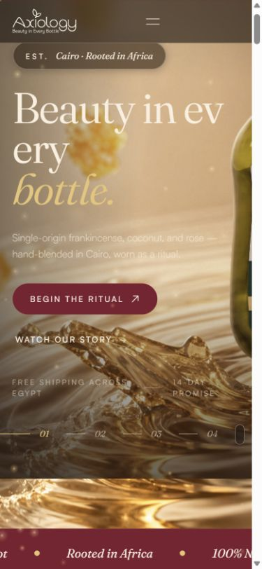
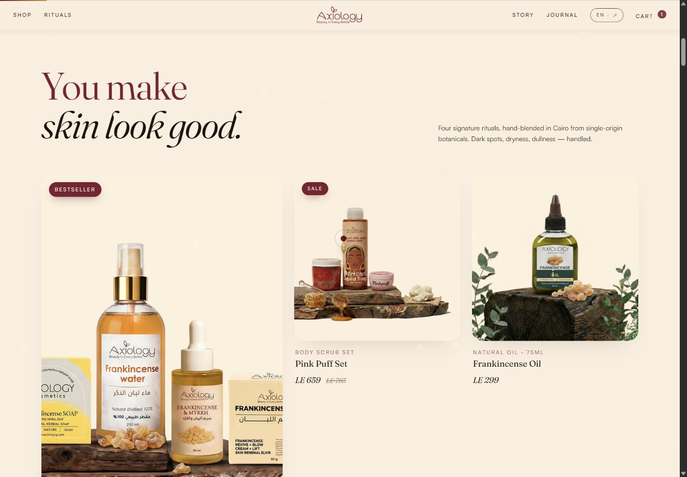

Immersive product discovery
A liquid WebGL hero and a Three.js bottle scene bring the skincare story into motion.
Websites
A botanical skincare storefront with an editorial approach to product discovery.
Product collections, bilingual navigation and a cinematic hero bring the rituals and ingredients into focus.
HTML5 / CSS3 / JavaScript / GSAP / ScrollTrigger / Three.js / WebGL / Lenis
A liquid WebGL hero and a Three.js bottle scene bring the skincare story into motion.
GSAP, ScrollTrigger and Lenis coordinate reveal sequences and smooth movement through the page.
English and Arabic interfaces keep the product journey accessible to both audiences.


